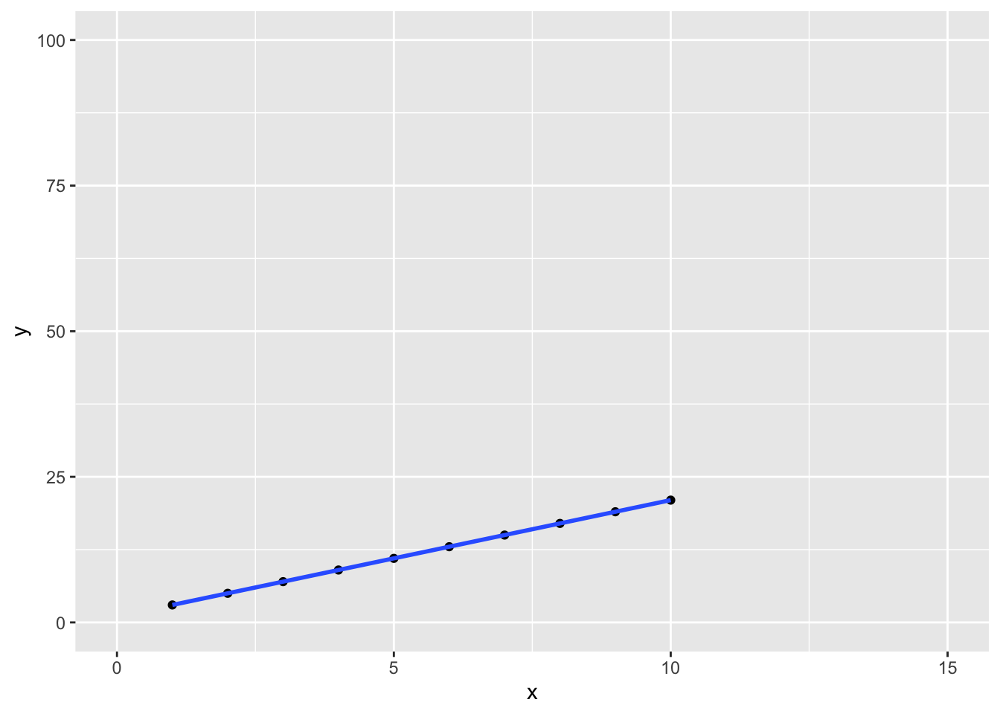

Chapter 2 Basics
You can think of R as a fancy calculator. We could do almost all of the operations we do in R on a calculator. However, that would take a lot of time and effort when we are dealing with a large amount of data. That’s (partly) why we’re using R. I hope this helps those who might have a bit of anxiety about coding.
You should also note that everything we do in R can also be done in other programming languages. However, R is used a lot by data analysts and statisticians. It is relatively easier to use for data analysis and there are lots of libraries (code someone else has written that makes our life easier) that come quite handy.
Without further ado, let’s dive in.
2.1 Basic Math Operations
You can use R to make carry out basic mathematical operations.
Addition
2+2## [1] 4Subtraction
4-2## [1] 2Multiplication
47*3## [1] 141Division
9/4## [1] 2.25Floor Division
9%/%4## [1] 2Exponentiation
2^3## [1] 82.2 Operators
You can use basic mathematical operators in R.
Equals
== is the equals operator. Notice that this is distinct from the = operator we are used to. The latter is used for variable assignment in R. We won’t use it. When you run 2==2, R will evaluate this statement and return TRUE of FALSE.
2 == 2## [1] TRUE2 == 7## [1] FALSENot Equal
!= is the not equal operator.
2!=2## [1] FALSE2!=7## [1] TRUEOther logical operators
<,>,<=,>=
2<3## [1] TRUE2>5## [1] FALSE2<=5## [1] TRUE2>=5## [1] FALSE2.3 Variables and Assignment
In R (like in many programming languages), values can be assigned to a variable to be used later. For example, you might want to store someone’s age in a variable and then use it later for some purpose. In R, variables created via assignment <-. The following code creates a variable called alex and assigns it the value 35. Let’s assume that this is Alex’s age.
alex <- 35Next time you want to do anything with the age, you can simply call the variable alex and do whatever you want with it (e.g. print, multiply, reassign, etc.). For example, the following code simply prints the value of the alex variable.
alex## [1] 35The following code multiples it by 2.
alex * 2## [1] 70Now assume that Alex’s friend Emma’s is 2 years younger than Alex. Let’s assign Emma’s age by subtracting 2 from Alex’ age. In the following code block, the first line creates the variable emma and assigns it the value alex - 2. The second line simply prints the value of the variable emma.
emma <- alex - 2
emma## [1] 33A variable can hold different types of data. In the previous examples, we assigned integers to variables. We can also assign characters, vectors, etc.
character
name <- "emma"
name## [1] "emma"vector
age_list <- c(35, 27, 48, 10)
age_list## [1] 35 27 48 102.4 Data Types
In R, values have types:
| Data Type | Examples |
|---|---|
| Integer (Numeric): | …, -3, -2, -1, 0, +1, +2, +3, … |
| Double (Numeric): | most rational numbers; e.g., 1.0, 1.5, 20.0, pi |
| Character: | "a", "b", "word", "hello dear friend, ..." |
| Logical: | TRUE or FALSE (or: T or F ) |
| Factor: | Restricted, user-defined set of values, internally represented numerically (e.g., Gender {‘male’, ‘female’, ‘other’}) |
| Ordered factor: | Factor with an ordering (e.g., Starbucks coffee sizes {‘venti’ > ‘grande’ > ‘tall’}) |
You need to understand the data types well as some operations are defined only on some data types. For example, you can add two integers or doubles but you cannot add an integer with a character.
my_integer_1 <- as.integer(2)
my_integer_2 <- as.integer(5)
my_character <- "two"
my_double <- 2.2Adding, multiplying, deducting, etc. two integers is fine. So is combining two doubles or a double with an integer.
my_integer_1 + my_integer_2## [1] 7my_integer_1 * my_double## [1] 4.4However, combining an integer with a character will lead to an error. You should read the errors carefully as they will help you understand where things went wrong.
my_integer_1 + my_character## Error in my_integer_1 + my_character: non-numeric argument to binary operator2.5 Determining the data type
If you don’t know the type of some data, you can use the typeof() function to get the type of a particular data item.
typeof(my_double)## [1] "double"typeof(my_integer_1)## [1] "integer"typeof(my_character)## [1] "character"2.6 Changing the types
You can change the type of a data item as long as the data is compatible with the type. For example, you can change an integer to a double.
as.double(my_integer_2)## [1] 5as.integer(my_double)## [1] 2You can also change a character into an integer if it is a compatible value.
as.integer("2")## [1] 2However, you cannot change any character into an integer.
as.integer("two")## Warning: NAs introduced by coercion## [1] NA2.7 Installing packages
Packages of code written by other developers for particular needs. They save you a lot of time and effort in carrying out your jobs. All you have to do is to find the right package for your task and learn what the package is capable of and how it works. In this class, we will use several packages that will simplify our lives.
To install a package, simply run install.packages("your_package_name"). For example, we will make use of the tidyverse package. The official CRAN page for tidyverse is here. This is a more user friendly link about tidyverse. Finally, this is a bookdown version that looks helpful.
install.packages('tidyverse')You need to install a package once. For this reason, you can use the console (bottom left window RStudio) rather than a script (top left window in RStudio). However, either way should work.
Once you install a package, you need to load it before you can use its functions. Just use library(package_name) to load the package. The convention is to load all the packages you will use at the beginning of your script. For example, we can import the tidyverse package as follows.
library(tidyverse)## ── Attaching packages ─────────────────────────────────────── tidyverse 1.3.2 ──
## ✔ ggplot2 3.3.6 ✔ purrr 0.3.4
## ✔ tibble 3.1.8 ✔ dplyr 1.0.10
## ✔ tidyr 1.2.1 ✔ stringr 1.4.1
## ✔ readr 2.1.2 ✔ forcats 0.5.2
## ── Conflicts ────────────────────────────────────────── tidyverse_conflicts() ──
## ✖ dplyr::filter() masks stats::filter()
## ✖ dplyr::lag() masks stats::lag()Tidyverse is a package that contains many useful packages including ggplot2 (used for plotting), tibble (used for efficient dataframes) etc. We will dedicate a chapter to tidyverse but feel free to learn about as you like.
2.8 Plotting
When you are analyzing data, plots are very useful to package information visually. There are various packages that help build nice plots. In this class, we will use the ggplot2 package for plotting. You might have notices in the output box above that loading tidyverse automatically loads ggplot2 as well. We can go ahead and use the ggplot2 functions without having to import it again. If we hadn’t imported tidyverse, then we would have to load ggplot2 to use its functionality.
Let us start with a simple plot for a linear function.
# Let us create a simple data set that satisfies the linear function y = 2x + 1
x <- 1:10
y <- 2*x+1
# print x and y to see what it looks like
x## [1] 1 2 3 4 5 6 7 8 9 10y## [1] 3 5 7 9 11 13 15 17 19 21Let us now plot the data as points.
ggplot(data=NULL, aes(x,y)) +
geom_point()Let us now plot a line to make our plot more informative and better looking.
# Let us now plot x and y using ggplot2
ggplot(data=NULL, aes(x,y)) +
geom_point() +
geom_smooth(method="lm")Notice that playing with the scale sizes will yield dramatic changes in the effects we observe. For this, we can simply use the xlim() and ylim() functions to identify the lower and upper limits of x and y axes.
ggplot(data=NULL, aes(x,y)) +
geom_point() +
geom_smooth(method="lm")+
xlim(0, 15) +
ylim(0,100)## `geom_smooth()` using formula 'y ~ x'
Let us now plot a quadratic function. A quadratic function is one where the base is a variable and the exponent is constant. The following graph plots n^2.
# Let us now plot a and b using ggplot2
a<- 1:10
b <- a^2
ggplot(data=NULL, aes(a,b)) +
geom_point() +
geom_smooth(method="lm",formula = y~x +I(x^2), color='orange')Finally, we can plot an exponential function where the variable is the exponent and the base is constant.
# Let us now plot a and b using ggplot2
a<- 1:10
b <- exp(a)
ggplot(data=NULL, aes(a,b)) +
geom_point() +
geom_smooth(method="lm",color = "orange",formula= (y ~ exp(x)))You can mix and match.
# Let us now plot x and y using ggplot2
a<- 1:10
b<- a^2
ggplot(data=NULL, aes(x,y)) +
geom_smooth(method="lm") +
geom_smooth(data=NULL, aes(a,b), method="lm", formula = y~x +I(x^2),color= 'orange') 2.9 Operators and functions in this section
2.9.1 Operators
x + y
Addition
x - y
Subtraction
x * y
Multiplication
x / y
Division
x^y
Exponentiation
x <- y
Assignment
==
Test for equality. Don’t confuse with a single =, which is an assignment operator (and also always returns TRUE).
!=
Test for inequality
<
Test, smaller than
>
Test, greater than
<=
Test, smaller than or equal to
>=
Test, greater than or equal to
2.9.2 Functions
install.packages(package_name)
Installs one or several package(s).
The argument package_name can either be a character (install.packages('dplyr')) like or a character vector (install.packages(c('dplyr','ggplot2'))).
library(package_name)
Loads a package called package_name.
typeof(x)
Determines the type of a variable/vector.
as.double(x)
Converts a variable/vector to type double.